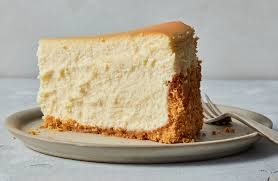

Why I Love Cows
September 20, 2024 by Danielle Brooks

I have always loved cows because of their calm and gentle nature. Watching them graze peacefully in
green pastures brings a sense of comfort and simplicity to life. They remind me to slow down and
appreciate the little things, like fresh air and open fields.
Beyond their peaceful presence, cows are incredibly important to communities around the world. From
providing milk and dairy products to being symbols of strength and nourishment, cows play a huge role
in our daily lives. To me, they represent balance, kindness, and connection to nature.
My Love for Cheesecake
September 22, 2024 by Danielle Brooks

Cheesecake is hands-down my favorite dessert. I love its smooth, creamy texture paired with the
perfect buttery crust. Every bite feels like a tingle sensation, whether it’s topped with fresh fruit,
chocolate, or just enjoyed plain.
What makes cheesecake special to me is its versatility. There are endless flavors and styles, from
reguar degular cheesecake to light and bailey's cheesecake. It’s the one dessert I can always say
no to, and sharing it with friends or family always makes it even sweeter.